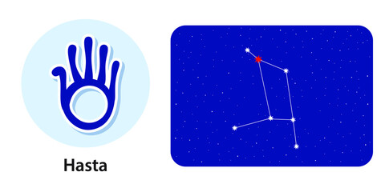

<
1. Pada 1st: The first pada of the Hasta Nakshatra comes in the Aries Navamsa and is ruled by Mars. The natives born in this pada are intelligent but aggressive in conversation. These people must drive carefully as they are prone to accidents.
2. Pada 2nd: The second pada of the Hasta Nakshatra falls in the Taurus Navamsa and is ruled by Venus. The people born in this pada are materialistic. These people are also interested in fine arts.
3. Pada 3rd: The third pada of the Hasta Nakshatra comes in the Gemini Navamsa ruled by Mercury. The people born in this pada are good with speech. Also, these natives like to argue and make sure that they win those arguments.
4. Pada 4th: The fourth pada of the Hasta Nakshatra comes in the Cancer Navamsa ruled by the Moon. The natives born in this pada are mentally wandering. They are more inclined toward family affairs and thus end up compromising on the career front.
“the hand”α, β, γ, δ and ε Corvi
Lord: Chandra (Moon)
Symbol: Hand or fist
Deity : Saviti or Surya, the Sun god
Stone: Pearl is your lucky stone.
Lucky numbers : 2 and 5
Lucky days:Monday, Wednesday and Friday
If a baby born in this nakshatram give her or him a name with starting letter “P” or “Sh” or “N” or “T”.
These persons should not live in South facing houses.
Persons born in Hasta nakshatram will have good taarabalam with following nakshatrams:
Mrigasira, Punarvasu, Aslesha, Pubba, Uttara, Chitta, Visakha, Jyesta, Purvashada, Uttarashada, Dhanishta, Purvabhadra, Revati, Bharani, Kritika.
Indian zodiac: 10° – 23°20′ Kanya
Western zodiac 6° – 19°20′ Libra
Hasta Nakshatra
Characteristics male
The male natives born in Hasta Nakshatra are of cool and humble nature. He is more bent toward the opposite gender because he gets a lot of attention from them. However, this attribute can also work against you if you get too indulged. Nevertheless, for others, once they get to know you, it is difficult for them to ignore or stay away from you. The male born in Hasta Nakshatra is also very helpful. One can rely on them for any need, and he humbly tries to help all. The male born in Hasta Nakshatra is a very down to earth person. You will never see him flaunting his wealth or disrespecting others. In a nutshell, these people contribute to making the world a better place.Profession male
The male natives born in Hasta Nakshatra don't like to delay things, and hence are very disciplined. The quality makes them a desired professional. However, these natives naturally leaned toward business opportunities. The males born in Hasta Nakshatra are average to good in education. Apart from education, they also have instincts to garner particular knowledge. In the life of these natives, professional uncertainty will prevail till the age of 30. This will be owing to the native wanting to try multiple things in life before he settles for one. Once you have found your kick, the period between 30 and 42 years of age will be the most fortunate time for you, both on the professional and personal fronts.Compatibility male
The male born in Hasta Nakshatra has a happy married life. The male is lucky to have a loyal and understanding wife who would support him both in his personal and professional decisions. The understanding between them will help both avert any kind of friction in the marriage. The wife of the male born in Hasta Nakshatra desires a lot of attention, and thus it is important that you take care of that need of hers. The couple, however, may conceive late.Health male
The male born in Hasta Nakshatra will be prone to minor health issues such as cold and cough throughout his life. As someone born in Hasta Nakshatra, you must practise breathing exercises as there are chances that you may develop breathing problems after you cross 30 years of age.Characteristics female
The female natives born in Hasta Nakshatra can be very shy and hence are less talkative. The shyness embeds in the qualities of an introvert. However, the shyness naturally succumbs once they get to know you better. The female born in Hasta Nakshatra also has a wild side, which not everyone gets to know. Just like the male counterparts, the female born in Hasta Nakshatra is also down to earth. However, she is very outspoken about things she finds wrong. When in this phase, she cares less about the impact her words may have on someone. This can make others resent her, but that is completely their loss. These women are also known for their physical attractiveness, a quality which improves for them with time.Profession female
The female natives born in Hasta Nakshatra are mostly free from any kind of financial compulsion from family. Hence, most of the time, they don't work. However, as per astrology, not working will be wasting the creative instincts that women born in Hasta Nakshatra are born with. The woman can work in creative fields like home decor, wedding planning, media, etc. Your spouse will likely support you in your endeavours. Also, even if not educated enough, still these women will have the skills to make a good earning for themselves.Compatibility female
The female born in Hasta Nakshatra will find a compatible partner. However, there will be some hiccups in your love life till 25 years of age. Hence, it is advised that you stay very cautious of who you date or be with, as chances of heartbreak are ever-present for you. The women born in Hasta Nakshatra will be married in a middle-to-rich household. You will have a good bond with your in-laws, and in the family that you are born in, you will be more attached to your mother.Health female
The female born in Hasta Nakshatra enjoys the luxury of good health, but minor ailments always prevail. Any symptoms that can lead to problems such as high blood pressure, varicose veins, and asthma shouldn't be ignored, as they can disrupt your peace in the late stages of your life.Hasta Nakshatra Padas
1. Pada 1st: The first pada of the Hasta Nakshatra comes in the Aries Navamsa and is ruled by Mars. The natives born in this pada are intelligent but aggressive in conversation. These people must drive carefully as they are prone to accidents.
2. Pada 2nd: The second pada of the Hasta Nakshatra falls in the Taurus Navamsa and is ruled by Venus. The people born in this pada are materialistic. These people are also interested in fine arts.
3. Pada 3rd: The third pada of the Hasta Nakshatra comes in the Gemini Navamsa ruled by Mercury. The people born in this pada are good with speech. Also, these natives like to argue and make sure that they win those arguments.
4. Pada 4th: The fourth pada of the Hasta Nakshatra comes in the Cancer Navamsa ruled by the Moon. The natives born in this pada are mentally wandering. They are more inclined toward family affairs and thus end up compromising on the career front.